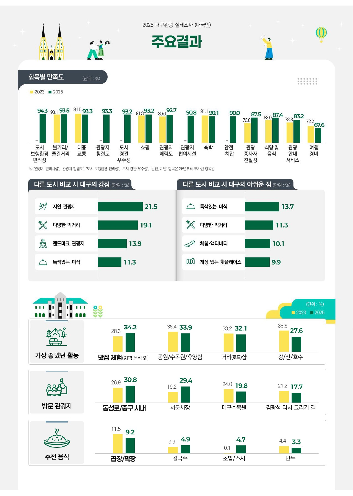
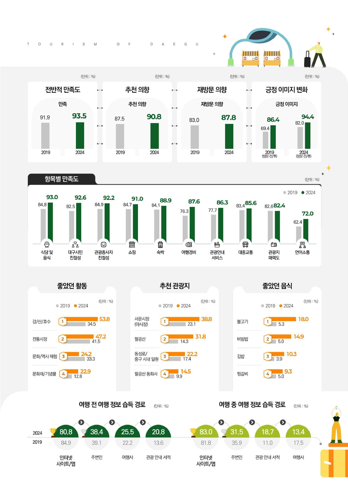

34.2%
대구 여행에서 가장 좋았던 활동 1위: 맛집 체험(지역 음식 외)
2023년 28.3%에서 5.9%p 올라 1위가 되었습니다. 2위 공원·수목원·휴양림은 33.9%입니다.
2025년 대구시 공식 조사에서 내국인 관광객이 꼽은 가장 좋았던 활동 1위는 '맛집 체험'(34.2%)이었습니다. 외국인 관광객은 '식당 및 음식'에 가장 높은 만족도(93.0%)를 줬습니다. 이 페이지에는 그 근거가 되는 원문 파일 이름, 쪽수, 원문 화면을 함께 모았습니다.
A등급은 대구시가 공개한 보고서 PDF를 직접 열어 해당 쪽에서 숫자를 확인한 것입니다. B·C등급은 발표나 보고서의 존재와 수치를 언론 기사로 확인했습니다. 발표 자료에는 가능하면 A등급 숫자를 앞세우세요.
대구 여행에서 가장 좋았던 활동 1위: 맛집 체험(지역 음식 외)
2023년 28.3%에서 5.9%p 올라 1위가 되었습니다. 2위 공원·수목원·휴양림은 33.9%입니다.
다른 도시와 비교한 대구의 강점에 '먹거리'를 꼽음
'다양한 먹거리' 19.1%(2위)와 '특색있는 미식' 11.3%(4위)를 더한 값입니다. 1위는 자연 관광지 21.5%입니다.
외국인 관광객 항목별 만족도 1위: 식당 및 음식
2019년 84.8%에서 올랐습니다. 대구시민 친절성(92.6%), 쇼핑(91.0%)보다 높습니다.
외국인 추천 관광지 1위: 서문시장(야시장)
2019년 23.1%에서 올랐습니다. 내국인 방문 관광지에서도 서문시장이 29.4%로 2위입니다(2025).
방한 외국인이 여행을 정할 때 고려한 활동 1위: 식도락
실제 식도락 참여율은 81.6%(1위)이고, 지출 중 음식 관련 비중은 45.9%입니다.
2025 대구치맥페스티벌 방문객
카드 매출은 평소보다 17.9% 늘었습니다. 통신사·카드사·SNS 빅데이터로 집계했습니다.
같은 조사에서 '특색있는 미식'(13.7%)과 '다양한 먹거리'(11.3%)는 다른 도시보다 아쉬운 점 1, 2위로도 꼽혔습니다. 관광객이 대구에서 음식을 기대하는데, 대구를 대표하는 음식이 아직 잘 드러나지 않는다는 뜻입니다. 대구 10미를 내세울 근거가 됩니다.
대구시 공식 전자책 서버에 올라온 보고서 페이지를 그대로 옮겼습니다. 숫자는 원문 그대로이고, 쪽수는 PDF 기준입니다.


| 수치 | 내용 | 조사·자료명 | 등급 | 참고 사이트 |
|---|---|---|---|---|
| 34.2% | 가장 좋았던 활동 1위 맛집 체험 | 2025 대구관광 실태조사(내국인), 대구광역시 | A | 대구시 전자책 PDF 6쪽 |
| 19.1% | 대구의 강점: 다양한 먹거리(2위) | 2025 대구관광 실태조사(내국인) | A | 대구시 전자책 PDF 6쪽 |
| 13.7% | 대구의 아쉬운 점 1위: 특색있는 미식 | 2025 대구관광 실태조사(내국인) | A | 대구시 전자책 PDF 6쪽 |
| 9.2% | 추천 음식 1위 곱창/막창 | 2025 대구관광 실태조사(내국인) | A | 대구시 전자책 PDF 6쪽 |
| 96.9% | 재방문 의향(2023년 89.7%) | 2025 대구관광 실태조사(내국인) | A | 대구시 전자책 PDF 5쪽 |
| 93.0% | 외국인 만족도 1위: 식당 및 음식 | 2024 대구관광 실태조사(외국인), 대구광역시 | A | 대구시 전자책 PDF 5쪽 |
| 38.8% | 외국인 추천 관광지 1위: 서문시장(야시장) | 2024 대구관광 실태조사(외국인) | A | 대구시 전자책 PDF 5쪽 |
| 61.7% | 방한 결정 시 고려 활동 1위: 식도락 | 2025 외래관광객조사, 문체부·한국관광공사 | B | 디지털데일리 |
| 45.9% | 외국인 지출 중 음식 관련 비중 | 2025 외래관광객조사 | B | 디지털데일리 |
| 65.6% | 국내여행 음식관광 참여(증가 폭 1위, +3.9%p) | 2025 국민여행조사, 문체부·한국문화관광연구원 | B | 세계일보 |
| 20.7% | 대구공항 입국 외국인 소비 2위: 일반외식업 | 문체부·한국관광공사 데이터(2026 상반기) | B | 경북매일 |
| 115만 명 | 2025 대구치맥페스티벌 방문객, 카드 매출 +17.9% | 대구시 빅데이터 분석 | B | 아주경제 |
| 45% | 일본인 방한 결정 요인 1위: 현지의 맛있는 한국 음식 | 2024 잠재방한여행객 조사, 한국관광공사 | B | 헤럴드경제 |
| 57.6% | 외국인이 대구에서 하고 싶은 활동 1위: 식도락 | 대구시 해외시장 대구관광 인식조사(2021 발표) | C | 경북매일 |
| 24.3% | 내국인이 가장 기억하는 대구 음식 1위: 막창 | 2017 대구관광 실태조사 | C | 경북일보 |
| 86곳 | 대구10미데이 참여 음식점(2025년 46곳의 약 2배) | 대구시 위생정책과 발표(2026) | B | 위키트리 |
| 파일명 | 발행 | 크기 | 공식 위치 |
|---|---|---|---|
| 2025년 대구관광 실태조사 보고서(내국인).pdf | 대구광역시 | 103.49 MB | 대구시 전자책 |
| 2024년 대구관광 실태조사 보고서(외국인).pdf | 대구광역시 | 21.58 MB | 대구시 전자책 |
| 2023 대구관광실태조사.pdf | 대구광역시 | 37.66 MB | 대구시 전자책 |
| 연도별 대구관광실태조사 모음(2018~2025) | 대구광역시 대구통계 | - | stat.daegu.go.kr |
| 2025년 외래관광객조사 최종 보고서 (2026.05.26 게시) | 문화체육관광부·한국관광공사 | 관광지식정보시스템 | |
| [0630]문체부보도자료-2025년 국민여행조사 결과 발표 | 문화체육관광부 관광정책과 | PDF 937 KB | 문체부 보도자료 |
대구시 전자책 화면 위쪽의 다운로드 버튼을 누르면 위 파일명 그대로 PDF를 받을 수 있습니다.
보고서 「일러두기」 10번 항목(PDF 3쪽)은 전재하거나 역재할 때 아래처럼 적으라고 정하고 있습니다.
「2025년 대구광역시 관광실태조사」 보고서 6쪽에서 전재
이 페이지의 모든 숫자는 아래 사이트 중 하나에서 나왔습니다.
| 구분 | 사이트·기사 | 날짜 | 쓰인 내용 |
|---|---|---|---|
| 공식 원문 | 대구시 전자책: 2025년 대구관광 실태조사 보고서(내국인) | 2025 | 맛집 체험 34.2%, 강점·아쉬운 점, 추천 음식, 재방문 의향 |
| 공식 원문 | 대구시 전자책: 2024년 대구관광 실태조사 보고서(외국인) | 2024 | 식당 및 음식 만족도 93.0%, 서문시장 38.8%, 좋았던 음식 |
| 공식 원문 | 대구시 전자책: 2023 대구관광실태조사 | 2023 | 2023년 비교 수치 |
| 공식 목록 | 대구통계: 대구관광실태조사 연도별 모음 | 2018~2025 | 보고서 위치 |
| 공식 목록 | 관광지식정보시스템: 외래관광객조사 보고서 목록 | 2026.05.26 | 2025 외래관광객조사 최종 보고서 위치 |
| 공식 발표 | 문화체육관광부 보도자료: 2025년 국민여행조사 결과 발표 | 2026.06.30 | 국민여행조사 원문 위치 |
| 언론 | 디지털데일리 | 2026.10.01 | 식도락 61.7%, 참여 81.6%, 음식 지출 45.9% |
| 언론 | 세계일보 | 2026.06.30 | 국내여행 음식관광 65.6% |
| 언론 | 경북매일 | 2026.09.28 | 대구공항 입국 외국인 외식업 소비 20.7% |
| 언론 | 아주경제 | 2025.11.05 | 치맥페스티벌 115만 명, 카드 매출 +17.9% |
| 언론 | 헤럴드경제 | 2025.10.19 | 일본인 방한 결정 요인 1위 음식 45% |
| 언론 | 경북매일 | 2021.07.04 | 외국인이 대구에서 하고 싶은 활동 식도락 57.6% |
| 언론 | 경북일보 | 2018.05.15 | 2017 실태조사, 기억에 남는 음식 막창 24.3% |
| 언론 | 경북일보 | 2022.02.15 | 대구 선택 이유 중 음식 8.9% (대구경북연구원) |
| 언론 | 위키트리 | 2026.09.06 | 대구 10미 목록·유래, 10미데이 참여 86곳 |
| 언론 | 한국경제 | 2025.05 | 대구 10미 선정 기준(2006년) |